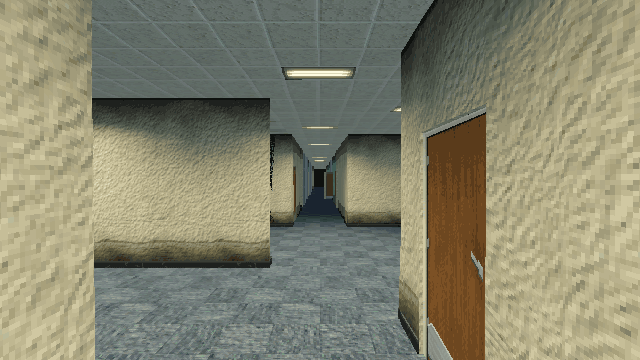

Tutorials › Make an Office Corridor That Never Ends
How to Make an Office Corridor That Never Ends in Godot 4
Segments built ahead of the player and freed behind, the same rooms when you walk back, by a seed.

A corridor that never ends is the backbone of a liminal game, and the easy way to make one, a long level, runs out of memory or out of corridor. One script builds it in segments: the ones ahead of the camera are built, the ones behind are freed, and what each segment holds comes from dice of the seed and its number, so walking back you pass the same doors. With loop_after it comes round to its first segment. With no pieces of your own it builds the corridor of boxes.
Script: endless_corridor.gd (MIT) · Godot 4.3 or newer · its folder on GitHub
How to use it
- Add a
Node3D, attachendless_corridor.gdand give your scene aCamera3D(your player's). Run: with no scenes set it builds the corridor of boxes along +X. - For your own pieces set
wall_scene,doorway_scene,door_scene,floor_scene,ceiling_sceneandlamp_scene: a 2 m grid, the origin at the floor centre of a cell, a wall on the cell's north edge (the Liminal PSX Office Kit free sampler'swall,wall_doorway,door_wood,floor,ceilingandceiling_lightare made so). - Set
seed,segment_cells,ahead,behind,door_chanceandloop_after(0: never repeats).
What it needs
- Godot 4.3 or newer (the Compatibility renderer is enough).
- A
Camera3Dthat moves along +X.
Try it free
The code builds its own corridor of boxes, so it runs in any project. The Liminal PSX Office Kit Free Sampler has the six pieces it can use; the endless corridor with rooms behind its doors is in Liminal PSX Office Kit.
How it was tested
In Godot 4.3 and 4.7.2, on its corridor of boxes: at the start it builds the camera's segment, one behind and two ahead; each cell holds its floor, ceiling and two walls; 200 m on it still holds four segments, the ones behind freed; walking back, a segment is built again the same; the dice give both doors and plain walls; with loop_after 4, segment 5 is segment 1 again. In the free sampler's project, with its six pieces set, they are what it builds.
The code
extends Node3D
## How to Make an Office Corridor That Never Ends in Godot 4
## Cordatix Godot 4 PSX tutorials, MIT licensed: https://github.com/GoldenSparrow-Dev/cordatix-godot-psx-tutorials
## Written for: https://cordatix.itch.io/liminal-psx-office-kit
## An office corridor that never ends (Godot 4.3+): segments built ahead of the camera and freed behind it. Each
## segment's doors and lamps come from the seed and the segment's number, so walking back you pass the rooms you
## passed; with loop_after the corridor comes round to its first segment again.
## Attach to a Node3D and run: with no scenes set it builds the corridor of boxes; set the six scenes for your own
## pieces (a 2 m grid, the origin at the floor centre of a cell, a wall on the cell's north edge). From the tutorial
## "How to Make an Office Corridor That Never Ends in Godot 4" (Cordatix). MIT licence.
@export var seed := 1
@export_range(2, 16) var segment_cells := 6
@export_range(1, 4) var ahead := 2
@export_range(0, 3) var behind := 1
## 0: never repeats; N: after N segments the corridor comes round again.
@export_range(0, 64) var loop_after := 0
@export_range(0.0, 1.0) var door_chance := 0.35
@export var wall_scene: PackedScene
@export var doorway_scene: PackedScene
@export var door_scene: PackedScene
@export var floor_scene: PackedScene
@export var ceiling_scene: PackedScene
@export var lamp_scene: PackedScene
const CELL := 2.0
var _built := {}
## A number from 0 to 1 for (segment, n): the same every time, on every machine.
func dice(k: int, n: int) -> float:
var h := posmod((seed + 1) * 73856093 ^ (k + 1) * 19349663 ^ (n + 1) * 83492791, 1000003)
return float(h % 1009) / 1009.0
## Every frame: the segment the camera is in, the ones ahead and behind built if they are not, the rest freed.
func _process(_delta: float) -> void:
var cam := get_viewport().get_camera_3d()
if cam == null:
return
var span := segment_cells * CELL
var here := floori(to_local(cam.global_position).x / span)
for k in range(here - behind, here + ahead + 1):
if not _built.has(k):
_built[k] = _segment(k)
for k in _built.keys():
if k < here - behind or k > here + ahead:
(_built[k] as Node).queue_free()
_built.erase(k)
## Segment k: its cells' floor and ceiling, a lamp in every third cell, and on each side a wall or a doorway with a
## door, by the dice of the segment's number (looped: its number modulo loop_after).
func _segment(k: int) -> Node3D:
var seg := Node3D.new()
seg.name = "Segment%s" % str(k).replace("-", "M")
seg.position.x = k * segment_cells * CELL
add_child(seg)
var kk := posmod(k, loop_after) if loop_after > 0 else k
for x in segment_cells:
var at := Vector3(x * CELL + CELL * 0.5, 0.0, 0.0)
_put(seg, floor_scene, "floor", at, 0.0)
_put(seg, lamp_scene if x % 3 == 1 else ceiling_scene, "lamp" if x % 3 == 1 else "ceiling", at, 0.0)
for side in [0, 1]: # 0 the north wall, 1 the south wall (turned 180 degrees)
var door := dice(kk, x * 2 + side) < door_chance
_put(seg, doorway_scene if door else wall_scene, "doorway" if door else "wall", at, 180.0 * side)
if door:
_put(seg, door_scene, "door", at, 180.0 * side)
return seg
## A piece's scene where it is set, else a box of its kind (a wall 2 x 3 m on the cell's north edge, a doorway as two
## side posts and a lintel, a door leaf, the floor and the ceiling, a lamp panel that glows).
func _put(seg: Node3D, scene: PackedScene, kind: String, at: Vector3, yaw: float) -> void:
var holder := Node3D.new()
holder.position = at
holder.rotation_degrees.y = yaw
seg.add_child(holder)
if scene != null:
holder.add_child(scene.instantiate())
return
match kind:
"wall":
_box(holder, Vector3(0, 1.5, -0.95), Vector3(2.0, 3.0, 0.1), Color(0.78, 0.68, 0.36), true)
"doorway":
_box(holder, Vector3(-0.75, 1.5, -0.95), Vector3(0.5, 3.0, 0.1), Color(0.78, 0.68, 0.36), true)
_box(holder, Vector3(0.75, 1.5, -0.95), Vector3(0.5, 3.0, 0.1), Color(0.78, 0.68, 0.36), true)
_box(holder, Vector3(0, 2.5, -0.95), Vector3(1.0, 1.0, 0.1), Color(0.78, 0.68, 0.36), true)
"door":
_box(holder, Vector3(0, 1.0, -0.95), Vector3(0.98, 1.99, 0.04), Color(0.45, 0.3, 0.18), true)
"floor":
_box(holder, Vector3(0, -0.05, 0), Vector3(2.0, 0.1, 2.0), Color(0.35, 0.4, 0.45), true)
"ceiling":
_box(holder, Vector3(0, 3.05, 0), Vector3(2.0, 0.1, 2.0), Color(0.75, 0.74, 0.7), false)
"lamp":
_box(holder, Vector3(0, 3.05, 0), Vector3(2.0, 0.1, 2.0), Color(0.75, 0.74, 0.7), false)
var panel := _box(holder, Vector3(0, 2.99, 0), Vector3(0.6, 0.02, 1.2), Color(1, 1, 0.9), false)
(panel.material_override as StandardMaterial3D).emission_enabled = true
(panel.material_override as StandardMaterial3D).emission = Color(1, 0.97, 0.85)
var light := OmniLight3D.new()
light.position = Vector3(0, 2.8, 0)
light.omni_range = 5.0
holder.add_child(light)
func _box(holder: Node3D, at: Vector3, size: Vector3, colour: Color, solid: bool) -> MeshInstance3D:
var mi := MeshInstance3D.new()
mi.mesh = BoxMesh.new()
(mi.mesh as BoxMesh).size = size
mi.position = at
var m := StandardMaterial3D.new()
m.albedo_color = colour
mi.material_override = m
holder.add_child(mi)
if solid:
var body := StaticBody3D.new()
var shape := CollisionShape3D.new()
shape.shape = BoxShape3D.new()
(shape.shape as BoxShape3D).size = size
body.position = at
body.add_child(shape)
holder.add_child(body)
return mi
The devlog and the pack
The step-by-step walkthrough comes as a devlog on itch.io on 10 December 2026; this page is the tutorial until then. It is written for Liminal PSX Office Kit, a PS1-style asset pack by Cordatix for Godot 4, Unity, Unreal and Blender.